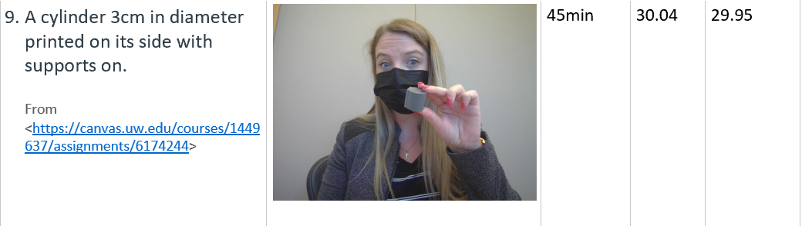
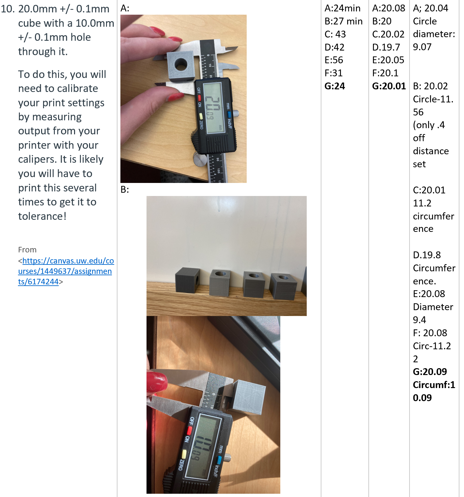
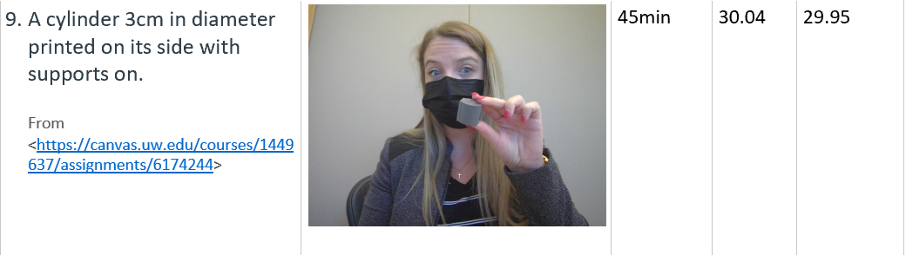
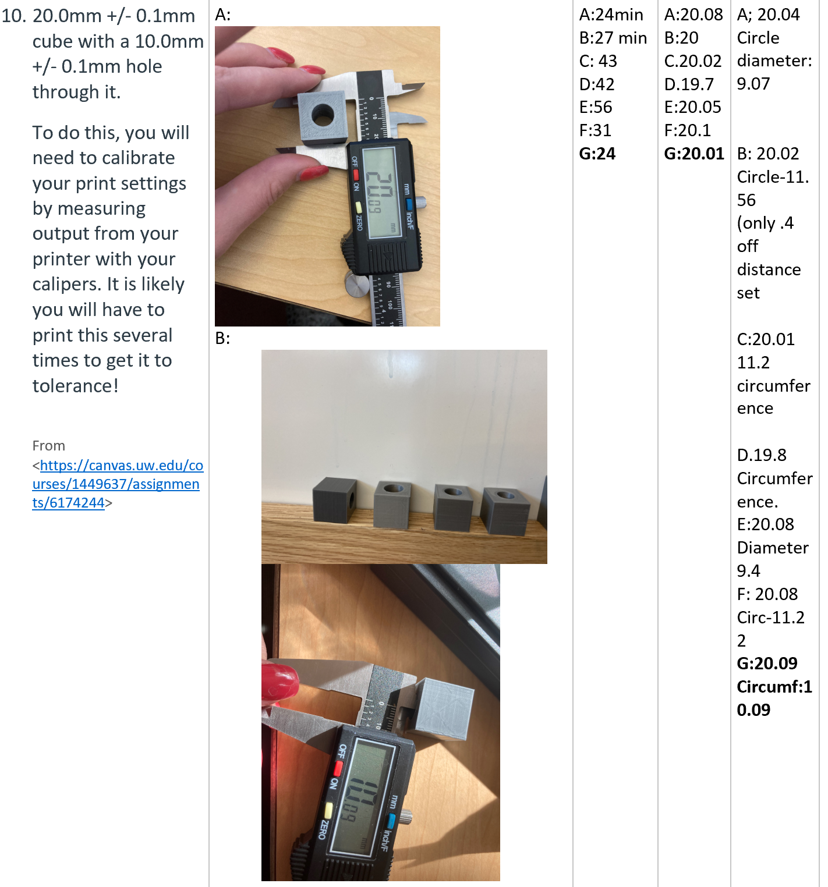

March of the Geometric Shapes!
Getting the Printer Ready
I am using a Prusa printer that has already been built by the IT (a couple years ago). I started by running a bed level test. The prusa has an auto adjuster so I am learning adust past that. First round the test was a bit loose. Then, when I went to ran my next test it got a notification to do a firmware update. I had to do some googling to figure that out, and learned to do that. I was required to wait for the IT intern, by the head of IT to proceed on making additional adjustments. We worked together and actually adjusted the heat and that helped and that fixed most of the problem. I think I can still make it better, however its pretty close and very workable for not detailed work. I plan to do some more research and I think IT is starting to trust me to make more adjustments. Below I have a couple pictures from the tests. I am also working on documentation of how to do a firmware update to go in the school technology documentation.

First Print, some sticking and some areas too close.

Much better!
All the Shapes
This has been a great activity to get to know the settings and get used to the workflow of getting something printed. In addition to what we used in class I am using OctoPrint to send my g.code to the printer. I created a chart to document my work and I have also been labeling my geometric shapes for potential future use to show others and for my own reference. I am getting excited to see how this work with translate into a middle school digital fabrication class!
The final Print---Getting the circle just right has been challenging. It took to print 5 and numerous ways to try and fix it. My cube has been fine, but the circle is too small. The first thing I did was to try a "Fine" or slower print. That helped but not enough. Then I adjusted the diamerter on the model, but I went too big with a milimeter. Then I tried changing the Horizontal Expanstion, but that made the diference broader. Then I went in and did adjusted the model by .2 and set to Fine. That didn't work either. I finally got it by slightly adjusting the model more visually in Rhino. YAY!!!
 


